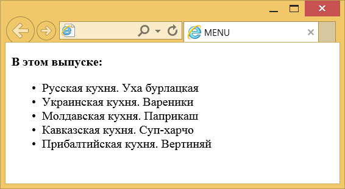

Элемент <menu>
| Internet Explorer | Chrome | Opera | Safari | Firefox |
| 8 |
| Android | Firefox Mobile | Opera Mobile | Safari Mobile |
| 8 |
Элемент <menu> предназначен для отображения списка пунктов меню. Аналогично элементам <ol> и <ul> внутри контейнера <menu> список формируется с помощью <li>.
В HTML4 элемент <menu> вышел из употребления, вместо него рекомендуется использовать <ul>. В HTML5 элемент <menu> вновь включен, но уже в другом качестве. Теперь он выступает контейнером для элемента <command> и создания меню.
Синтаксис
<menu>
<li>пункт меню</li>
<li>пункт меню</li>
</menu>Закрывающий тег
Аттрибуты
- label
- Устанавливает видимую метку для меню.
- type
- Задаёт тип меню.
Пример
<!DOCTYPE HTML PUBLIC "-//W3C//DTD HTML 4.01 Transitional//EN"
"http://www.w3.org/TR/html4/loose.dtd">
<html>
<head>
<meta http-equiv="Content-Type" content="text/html; charset=utf-8">
<title>MENU</title>
</head>
<body>
<p><strong>В этом выпуске:</strong></p>
<menu>
<li>Русская кухня. Уха бурлацкая</li>
<li>Украинская кухня. Вареники</li>
<li>Молдавская кухня. Паприкаш</li>
<li>Кавказская кухня. Суп-харчо</li>
<li>Прибалтийская кухня. Вертиняй</li>
</menu>
</body>
</html>Результат данного примера показан на рис. 1.

Рис. 1. Вид списка, созданного с помощью <menu>
<!DOCTYPE html>
<html>
<head>
<meta charset="utf-8">
<title>MENU</title>
</head>
<body>
<menu type="toolbar">
<li>
<menu label="Файл">
<button type="button">Новый...</button>
<button type="button">Открыть...</button>
<button type="button">Сохранить</button>
</menu>
</li>
<li>
<menu label="Правка">
<button type="button">Копировать</button>
<button type="button">Вырезать</button>
<button type="button">Вставить</button>
</menu>
</li>
</menu>
</body>
</html>Примечание
Firefox поддерживает только создание контекстного меню, когда значение атрибута type равно context.
Спецификация ?
| Спецификация | Статус |
|---|---|
| WHATWG HTML Living Standard | Живой стандарт |
| HTML5.1 | Рабочий проект |
Спецификация
Каждая спецификация проходит несколько стадий одобрения.
- Recommendation (Рекомендация) — спецификация одобрена W3C и рекомендована как стандарт.
- Candidate Recommendation (Возможная рекомендация) — группа, отвечающая за стандарт, удовлетворена, как он соответствует своим целям, но требуется помощь сообщества разработчиков по реализации стандарта.
- Proposed Recommendation (Предлагаемая рекомендация) — на этом этапе документ представлен на рассмотрение Консультативного совета W3C для окончательного утверждения.
- Working Draft (Рабочий проект) — более зрелая версия черновика после обсуждения и внесения поправок для рассмотрения сообществом.
- Editorʼs draft (Редакторский черновик) — черновая версия стандарта после внесения правок редакторами проекта.
- Draft (Черновик спецификации) — первая черновая версия стандарта.
Особняком стоит живой стандарт HTML (Living) — он не придерживается традиционной нумерации версий, поскольку находится в постоянной разработке и обновляется регулярно.